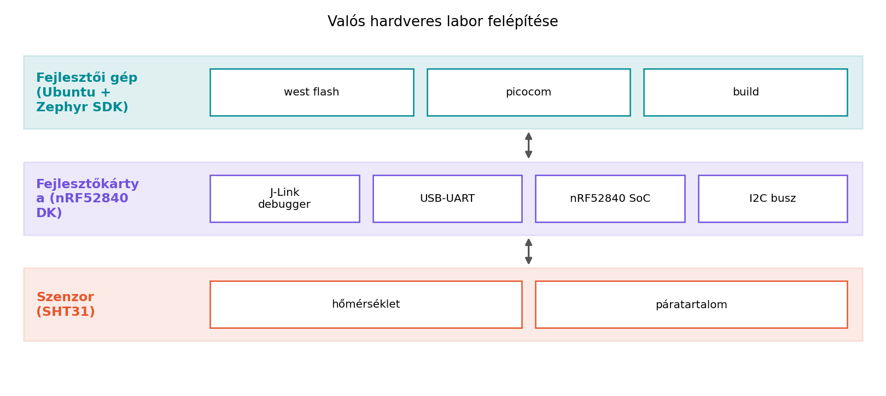

A native_sim környezetben a TerraSense
szenzorcsomópontja hardver nélkül, meghatározott időzítésekkel és
emulált szenzoradatokkal fut. Ez kiválóan alkalmas az alkalmazáslogika
fejlesztésére, de nem ad választ arra, hogyan viselkedik a kód egy
valódi I2C buszon, egy valódi rádióval, vagy hogyan fogyaszt egy valódi
akkumulátoros kártya. Akkor van szükség valós hardverre, ha a cél az
eszközszoftver és a periféria közötti integráció, a rádiós kommunikáció
vagy az energiamérés tesztelése. Ebben az alfejezetben kiválasztunk egy
Zephyr által támogatott fejlesztőkártyát és egy I2C szenzort, majd
felépítjük azt a minimális laborkiterjesztést, amelyre a későbbi
szenzorolvasási, energiamérési és OTA-frissítési laborok építenek.
Definíció. A fejlesztőkártya (development board, devboard) olyan nyomtatott áramköri lap, amely egy mikrovezérlőt vagy SoC-t, valamint a programozáshoz, tápláláshoz, hibakereséshez és perifériák csatlakoztatásához szükséges kiegészítő áramköröket (USB–UART híd, debugger, feszültségátalakító, LED-ek, csatlakozók) tartalmaz. A Zephyr kontextusában a board-támogatás azt jelenti, hogy a Zephyr rendelkezik az adott kártyához tartozó devicetree-leírással, konfigurációs alapértelmezésekkel és build-célokkal, így az alkalmazáskód nagyrészt board-független maradhat.
A labor valós hardveres kiterjesztéséhez két komponenst választunk:
egy nRF52840 DK fejlesztőkártyát és egy
SHT31 típusú I2C hőmérséklet/páratartalom-szenzort. Az
nRF52840 egy Nordic Semiconductor gyártotta multimódusú SoC, amely
Bluetooth 5-öt, 802.15.4-et (Thread/Zigbee alapsávot) és ARM Cortex-M4
magot tartalmaz. A DK (Development Kit) változat integrált J-Link
debuggerrel, virtuális soros porttal és Arduino-kompatibilis
lábkiosztással érkezik, ezért a Zephyr egyik leggyakrabban használt
célkártyája. A board-név a Zephyr verziójához kötött: a könyvben
rögzített Zephyr 3.7.0 LTS-ben a kanonikus board-cél
nrf52840dk/nrf52840 (hardvermodell v2), a régi
nrf52840dk_nrf52840 név elavult, de a 3.7.0 még elfogadja.
A build előtt mindig ellenőrizzük a west boards
kimenetében, hogy a telepített kiadás melyik nevet ismeri.
Az SHT31 az SHT3x szenzorcsalád tagja; az I2C buszon a 7 bites címe
0x44, de a 0x45-ös változat is létezik (az ADDR láb bekötése dönti el).
A szenzor a hőmérsékletet és a relatív páratartalmat digitális formában,
16 bites felbontással adja vissza. A Zephyr sht3xd drivere
közvetlenül támogatja, így a szenzor API-n keresztül olvashatjuk az
értékeket anélkül, hogy a nyers I2C regiszterleírást ismernünk
kellene.
A valós hardver és a native_sim közötti eltérések négy
csoportba sorolhatók:
Időzítés. A szimulációban a
k_sleep() és az időzítők virtuális időben futnak, nem
feltétlenül felelnek meg a valós hardver órajelének és késleltetéseinek.
Egy I2C-tranzakció időtartama a szimulátorban becsült, míg a valós
hardveren a buszsebesség (tipikusan 100 vagy 400 kHz) és a slave
válaszideje határozza meg.
Rádió. A native_sim nem modellezi a
rádiós fizikai réteget. A Bluetooth Low Energy, a 802.15.4 vagy a
LoRaWAN stackek egyes részei futtathatók szimulált környezetben, de a
csomagvesztés, az interferencia és a hatótáv csak valós környezetben
vizsgálható.
Energiafogyasztás. A szimulátor nem méri a mikrovezérlő és a perifériák tényleges áramfelvételét. Az alvómódok és a fogyasztáscsökkentés hatékonysága csak hardveren, árammérővel vagy a kártya energiaprofilozó funkcióival ellenőrizhető.
Konkurens hardver-hozzáférés és hibák. A valós hardveren megjelenhetnek olyan jelenségek, mint az I2C busz húzása (stuck bus), a szenzor nem válaszol (NACK), vagy a megszakítások prioritási versenye, amelyek a szimulátorban nem reprodukálhatók pontosan.

A diagram felülről lefelé mutatja a rétegeket. A fejlesztői gép a
west flash paranccsal tölti fel a firmware-t a kártyára a
J-Link debuggeren keresztül, és picocom-mal csatlakozik a
virtuális soros porthoz. A kártya az I2C buszon kommunikál a szenzorral,
amely a mért értékeket digitálisan adja vissza. Ez a kapcsolat a
TerraSense ts-node valós hardveres megfelelője, amely
később a telemetriai adatokat küldi tovább.
A fejlesztőkártya kiválasztásakor a következő szempontokat mérlegeljük:
| Szempont | nRF52840 DK | ESP32-DevKitC | STM32 Nucleo (pl. L4) |
|---|---|---|---|
| Zephyr board-támogatás | kiváló, rendszeresen tesztelt | jó, de a WiFi stack Zephyr alatt korlátozott | kiváló, főleg a hivatalos támogatás |
| Beépített rádió | BLE 5, 802.15.4 | WiFi, Bluetooth | nincs (külső modul kell) |
| Debugger | integrált J-Link | nincs (USB-UART csak) | integrált ST-Link |
| Energiamérési lehetőség | kiépített mérőpontok | korlátozott | fajtától függ |
| Ár (irányadó, 2024) | közepes | alacsony | alacsony–közepes |
| Szenzorcsatlakozás | I2C, SPI, GPIO, Qwiic/Stemma | I2C, SPI, GPIO | I2C, SPI, GPIO, Arduino fejléc |
A TerraSense tananyaghoz az nRF52840 DK az ajánlott választás, mert a későbbi BLE- és Thread-laborok ezen valós hardveren is futtathatók, a debugger támogatja a gyors fejlesztést, és az energiamérésekhez szükséges mérőpontok is elérhetők. Az ESP32 azoknak előnyös, akik WiFi-alapú eszközt szeretnének, de a Zephyr alatti WiFi-támogatás és a fogyasztásmérés kevésbé kényelmes. Az STM32 Nucleo olcsó belépő, viszont nincs beépített rádiója, ezért a kommunikációs laborokhoz kiegészítő modul kell.
A szenzorválasztásban az SHT31 mellett a BME280 is gyakori. A BME280
a hőmérséklet és páratartalom mellett légnyomást is mér, de az I2C címe
(0x76 vagy 0x77) és a driver beállítása kissé eltér. A TerraSense
üvegház-monitorozásához a hőmérséklet és a páratartalom elegendő, ezért
az SHT31 egyszerűbb, és a Zephyr sht3xd drivere stabil. A
végleges típus kiválasztását a beszerzési lehetőség és a foglalat
befolyásolja; a labor kódjában a devicetree overlayben kell megadni a
ténylegesen használt modellt.
Munkakönyvtár: hozzuk létre a
~/iot-labor/i005/ts-node-hardware projektkönyvtárat (benne
a src/ és boards/ almappával), és abban
dolgozzunk. Az előfeltétel a Labor felállítása
alfejezetben telepített Zephyr SDK és west.
mkdir -p ~/iot-labor/i005/ts-node-hardware/src ~/iot-labor/i005/ts-node-hardware/boards
cd ~/iot-labor/i005/ts-node-hardware
source ~/zephyr-venv/bin/activate
export ZEPHYR_BASE=~/zephyrproject/zephyrHozzuk létre a projektvázat a ts-node-hardware mappában;
a fájlok relatív útvonalai ehhez a könyvtárhoz tartoznak. Ez nem a
végleges ts-node alkalmazás, hanem egy minimális
szenzorolvasó minta, amelyet a későbbi laborok bővítenek. A projekt a
következő fájlokból áll:
CMakeLists.txt:
cmake_minimum_required(VERSION 3.20)
find_package(Zephyr REQUIRED HINTS $ENV{ZEPHYR_BASE})
project(ts_node_hw)
target_sources(app PRIVATE src/main.c)prj.conf:
CONFIG_I2C=y
CONFIG_SENSOR=y
CONFIG_SHT3XD=y
CONFIG_PRINTK=yboards/nrf52840dk_nrf52840.overlay (a
nrf52840dk/nrf52840 board-célhoz tartozó overlay; a
fájlnévben a board-cél / karaktere _-ra
képeződik):
/ {
aliases {
sensor0 = &sht31;
};
};
&i2c0 {
status = "okay";
clock-frequency = <100000>;
sht31: sht31@44 {
compatible = "sensirion,sht3xd";
reg = <0x44>;
};
};Megjegyzés: az &i2c0 címke a kártya devicetree-jéből
származik; ha az i2c1 busz van kivezetve a
szenzor-csatlakozóra, akkor azt kell használni. Ezt mindig ellenőrizzük
a Zephyr board dokumentációjában vagy a kártya kapcsolási rajzán.
Bekötés: nRF52840 DK (PCA10056) és SHT31 modul. A
laborban használt kártya a hivatalos nRF52840 DK (PCA10056), amelyet a
nrf52840dk/nrf52840 board-cél ír le. Az alábbi táblázat a
DK Arduino-kompatibilis fejlécének I2C-kivezetéseit és egy tipikus SHT31
breakout (például Adafruit SHT31-D) jeleit köti össze. A DK digitális
lábai 3,3 V-os logikai szintűek, ezért a szenzort is 3,3 V-ról
tápláljuk, és a felhúzók is 3,3 V-ra mutassanak.
| SHT31 modul | nRF52840 DK | Megjegyzés |
|---|---|---|
| VIN | 3V3 | 3,3 V; a DK 3V3 kimenete a szenzor kis áramfelvételéhez elegendő |
| GND | GND | közös föld a tápláláshoz és a jelvezetékekhez |
| SDA | P0.26 (Arduino SDA) | az i2c0 alapértelmezett SDA-lába a DK
board-leírásában |
| SCL | P0.27 (Arduino SCL) | az i2c0 alapértelmezett SCL-lába a DK
board-leírásában |
| ADDR | GND | 7 bites cím 0x44; 3V3-ra kötve 0x45 |
| RST | szabadon hagyva | aktív alacsony reset; a modul adatlapján ellenőrizzük a belső felhúzót |
A DK board devicetree-je az i2c0 csomóponthoz
pinctrl-0 = <&i2c0_default> bejegyzést rendel,
amely P0.26-ot SDA-nak, P0.27-et SCL-nek állítja be. Ezért a fenti
bekötéshez az overlayben nem kell új pinctrl-csoportot felvenni: a board
leírása és a felülírt &i2c0 csomópont együtt adja a
végleges pinmuxot. Ha más lábpárra kötünk, a &pinctrl
csomópontban új csoportot kell definiálni, és az i2c0
pinctrl-0 tulajdonságában arra hivatkozni; a pontos
NRF_PSEL szintaxist a Zephyr 3.7.0 board-dokumentációja
szerint ellenőrizzük.
Az I2C busz open-drain felépítésű, ezért az SDA és SCL vonalnak felhúzó ellenállásra van szüksége. A legtöbb SHT31 breakout tartalmaz 4,7–10 kΩ-os felhúzót; ezt a modul kapcsolási rajzán ellenőrizzük. Ha a modulon nincs felhúzó, a DK 3,3 V-os kimenete és az SDA/SCL vonal közé 4,7 kΩ-os ellenállást kell kötni. A felhúzókat soha ne 5 V-ra kössük, mert a DK GPIO-bemenetei nem 5 V-tűrők. A kártyarevízió és a szenzormodul típusa a lábkiosztást és a felhúzókat befolyásolhatja, ezért a bekötés előtt a kártya és a modul kapcsolási rajzát is ellenőrizzük.
src/main.c:
#include <zephyr/kernel.h>
#include <zephyr/device.h>
#include <zephyr/drivers/sensor.h>
static const struct device *sensor = DEVICE_DT_GET(DT_ALIAS(sensor0));
/*
* A sensor_value elojeles fixpontos ertek: val1 az egesz resz, val2 a
* mikroresz. A 64 bites kozbulso ertek miatt a negativ ertekek is helyesen
* jelennek meg, es nem hasznalunk lebegopontos printf-formatumot.
*/
static void print_sensor_value(const char *label,
const struct sensor_value *value,
const char *unit)
{
int64_t micro = (int64_t)value->val1 * 1000000 + value->val2;
int sign = (micro < 0) ? -1 : 1;
uint64_t abs_micro = (uint64_t)(sign * micro);
printk("%s: %s%u.%06u %s\n", label, sign < 0 ? "-" : "",
(uint32_t)(abs_micro / 1000000),
(uint32_t)(abs_micro % 1000000), unit);
}
int main(void)
{
if (!device_is_ready(sensor)) {
printk("Szenzor nem elerheto\n");
return 0;
}
printk("SHT31 szenzor inicializalva\n");
while (1) {
struct sensor_value temp, hum;
int rc;
if (sensor_sample_fetch(sensor) != 0) {
printk("Mintavetel hiba\n");
k_sleep(K_SECONDS(5));
continue;
}
rc = sensor_channel_get(sensor, SENSOR_CHAN_AMBIENT_TEMP, &temp);
if (rc != 0) {
printk("Homerseklet csatorna hiba: %d\n", rc);
k_sleep(K_SECONDS(5));
continue;
}
rc = sensor_channel_get(sensor, SENSOR_CHAN_HUMIDITY, &hum);
if (rc != 0) {
printk("Paratartalom csatorna hiba: %d\n", rc);
k_sleep(K_SECONDS(5));
continue;
}
print_sensor_value("Homerseklet", &temp, "C");
print_sensor_value("Paratartalom", &hum, "%RH");
k_sleep(K_SECONDS(5));
}
}A kód a Zephyr sensor API-t használja. A
DEVICE_DT_GET(DT_ALIAS(sensor0)) makró a devicetree-ben
definiált sensor0 alias alapján kéri le az eszközleírót. A
device_is_ready() ellenőrzi, hogy a driver betöltődött és a
hardver elérhető. A ciklus öt másodpercenként kéri le a mintákat: a
sensor_sample_fetch() elindítja az I2C-átvitelt, a
sensor_channel_get() pedig a már beolvasott értékeket
másolja a sensor_value struktúrába. A két
sensor_channel_get() visszatérési értékét is ellenőrizzük:
hibás vagy nem támogatott csatorna esetén nem formázunk értéket, hanem
hibaüzenetet írunk, és kihagyjuk az iterációt. A
print_sensor_value() a val1/val2
párt előjeles fixpontos alakként jeleníti meg: a val1 az
egész rész, a val2 a mikrorész, és negatív értéknél a két
mező előjele azonos (az egész rész nulla lehet). A 64 bites közbülső
értéknek köszönhetően a -0,5 °C és a -12,25 °C is helyesen,
-0.500000, illetve -12.250000 alakban jelenik
meg. A printk alapértelmezett Zephyr-konfigurációban nem
támogatja a %f formátumot, ezért szándékosan nem használunk
lebegőpontos kiírást.
Build parancs (a projektkönyvtárból, aktivált
venv-vel és beállított ZEPHYR_BASE-szel; a záró
. a forráskönyvtár):
west build -b nrf52840dk/nrf52840 -d build/hw .A sikeres build a build/hw/zephyr/zephyr.hex fájlt hozza
létre.
Ha a board-cél nem található, először listázzuk:
west boards | grep nrf52840Flashelés (a kártya USB-n csatlakoztatva, J-Link driverrel):
west flash -d build/hwSoros konzol a kimenet megtekintéséhez (a
/dev/ttyACM0 a virtuális soros port, eltérhet):
picocom -b 115200 /dev/ttyACM0Kilépés a picocom-ból: Ctrl-A majd
Ctrl-X.
Várt kimenet (illusztratív, nem tényleges mérés):
SHT31 szenzor inicializalva
Homerseklet: 23.456789 C
Paratartalom: 47.123456 %RH
Homerseklet: 23.512345 C
Paratartalom: 46.987654 %RHA konkrét értékek a környezettől és a szenzor kalibrációjától
függnek. A native_sim esetén ez a labor nem futtatható,
mert az I2C és a szenzor valós hardvert igényel; a szimulált
szenzorokhoz a Szenzorolvasás a Zephyr sensor
API-val alfejezet ad útmutatást.
A labor sikerességét a konzolon megjelenő ismétlődő mérési sorok jelzik. Ha a kimenet nem jelenik meg, a következő táblázat segít:
| Tünet | Lehetséges ok | Javítás |
|---|---|---|
Szenzor nem elerheto |
Az I2C cím hibás, vagy a szenzor nincs bekötve | Ellenőrizzük a bekötést, a feszültségszinteket, és hogy az
overlayben a reg értéke 0x44 (vagy 0x45) |
| Nincs semmilyen kimenet a konzolon | A soros port nem a /dev/ttyACM0, vagy a baudrate
eltér |
Ellenőrizzük dmesg | tail és a port nevét; próbáljunk
más baudrate-et (pl. 9600, 115200) |
west flash hibát ad |
A J-Link driver hiányzik, vagy a kártya nincs csatlakoztatva | Telepítsük a J-Link Software-t (ellenőrizendő verzió), és csatlakoztassuk a kártyát |
| A build sikeres, de a szenzor nem válaszol | Az i2c0 helyett i2c1 busz kell, vagy nincs
engedélyezve a CONFIG_I2C |
Nézzük meg a végleges devicetree-t a
build/zephyr/zephyr.dts fájlban, és a generált
devicetree_generated.h fejlécet: ott látszik a szenzor
busza és reg értéke. A CONFIG_I2C-t a
west build -t menuconfig alatt ellenőrizzük, majd szükség
esetén módosítsuk az overlayt |
Hasznos ellenőrzési lépés az I2C busz szkennelése egy külön kis programmal, amely mind a 127 címen megpróbál egy írási tranzakciót. A Zephyrben ez néhány sorból megvalósítható, de a laborhoz elegendő a fenti hibakeresési út.
A szimulációban működő kód változatlanul átvihető a valós
hardverre. A native_sim nem modellezi az I2C busz
valós időzítését és hibáit, ezért a szimulált úton sikeres kód hardveren
NACK hibát vagy váratlan késleltetést okozhat. Mindig számítsunk a
hardveres perifériák inicializálási és időzítési különbségeire.
A native_sim energiaadatai valósnak
tekinthetők. A szimulátor nem méri a fogyasztást, ezért az
energiamodellezéshez valós hardveren, megfelelő mérőeszközzel végzett
mérés szükséges. A szimulátorban kapott értékek legfeljebb a szoftveres
állapotváltások relatív gyakoriságát jelzik.
A fejlesztőkártya tápfeszültsége mindig 3,3 V. Sok kártya 5 V-os USB-ről táplálkozik, de a GPIO és az I2C lábak 3,3 V-os logikai szintűek lehetnek. Az 5 V-os szenzor csatlakoztatása károsíthatja a mikrovezérlőt, ezért mindig ellenőrizzük a feszültségszinteket.
Az ESD-védelem nem fontos a laborban. A szenzorok és a kártyák érzékenyek az elektrosztatikus kisülésre. A földelt csuklópánt és a vezető munkafelület használata megelőzi a statikus feltöltődésből eredő meghibásodásokat.
Fogalmi/döntési kérdés. Miért nem alkalmas a
native_sim a rádiós kommunikáció és az energiafogyasztás
hiteles tesztelésére? Fogalmazza meg két-két mondatban mindkét
korlátot.
Számolási/tervezési feladat. Az SHT31 I2C buszon 400 kHz sebességgel kommunikál. Egy mérési tranzakció 6 bájtot ír, majd 6 bájtot olvas. Becsülje meg, mennyi időt vesz igénybe egyetlen mérés az adatátvitel szempontjából. Használja ezt a modellt: bájtonként 9 bit (8 adatbit + ACK), a 12 adatbájton felül két címbájt (írási és olvasási cím), valamint a START, az ismételt START és a STOP feltétel együtt 3 bitidőnek számít; más overhead nincs. Adja meg a képletet és a végeredményt mikroszekundumban.
Implementációs feladat. Módosítsa a labor
devicetree overlayjét úgy, hogy a szenzor a 0x45 címen legyen elérhető,
és az alias neve sensor0 maradjon. Írja le a szükséges
dts kódrészletet, és magyarázza el, miért változik a
cím.
Hibakeresési/kiterjesztési feladat. A konzolon a
Mintavetel hiba üzenet jelenik meg, és a szenzor nem ad
értéket. Soroljon fel legalább három lehetséges okot, és mindegyikhez
egy ellenőrzési lépést.
1. Fogalmi kérdés. A native_sim nem
modellezi a rádió fizikai rétegét, ezért nem tudja szimulálni a
csomagvesztést, az interferenciát és a hatótávtényezőket. Az
energiafogyasztást sem tudja mérni, mert a szimulátor a virtuális időben
fut, és nem rendelkezik a valós hardver áramfelvételének analóg
modelljével. Az energiaprofil csak hardveren, árammérővel vagy a kártya
beépített mérőpontjain keresztül határozható meg.
2. Számolási feladat. A tranzakció 12 bájtnyi adatot mozgat. Egy bájt 8 bit, mindegyikhez 1 ACK bit tartozik, így bájtonként 9 bit (az ACK tehát itt van beszámítva, külön overheadként nem). A 12 adatbájthoz két címbájt jön, a START, az ismételt START és a STOP pedig összesen 3 bitidő, így az effektív bitek száma:
Az átviteli idő 400 kHz buszsebességnél:
Tehát egyetlen mérés adatátvitele körülbelül 322 mikroszekundumot vesz igénybe, a szenzor belső mérési ideje (amely tipikusan 10–20 ms) ehhez hozzáadódik. (Az érték becslés, a busz overheadje a konkrét protokolltól függ.)
3. Implementációs feladat. Az SHT31 I2C címe az ADDR
láb bekötésétől függ. Ha az ADDR lábat alacsony szintre kötjük, a cím
0x44, ha magasra, akkor 0x45. A devicetree overlayben csak a
reg értékét kell módosítani:
sht31: sht31@45 {
compatible = "sensirion,sht3xd";
reg = <0x45>;
};Az alias nem változik, mert az továbbra is sensor0-ként
hivatkozik a szenzorra. A cím megváltoztatása lehetővé teszi két azonos
típusú szenzor egy buszra kötését is.
4. Hibakeresési feladat. Lehetséges okok és ellenőrzésük:
build/zephyr/zephyr.dts fájlt: ez a végleges, összefűzött
devicetree, benne az sht31 csomópont szülője mutatja a
buszt, a reg tulajdonság pedig a címet. A generált
build/zephyr/include/generated/zephyr/devicetree_generated.h
fejléc ugyanezt gépi formában tartalmazza (a pontos útvonal a
Zephyr-verziótól függhet). A west build -t menuconfig nem a
devicetree-t, hanem a Kconfig-beállításokat szerkeszti; azt csak a
CONFIG_I2C és a CONFIG_SHT3XD ellenőrzésére
használjuk.CONFIG_I2C vagy a CONFIG_SHT3XD
hiányzik a prj.conf-ból. Győződjünk meg róla, hogy
a konfigurációban szerepelnek, és a build naplója nem jelzi a sensor
driver kihagyását.Ez az alfejezet a valós hardveres laborkiterjesztés alapjait mutatta
be. Kiválasztottuk az nRF52840 DK fejlesztőkártyát és az SHT31 I2C
szenzort, megadtuk a szimuláció és a valós hardver közötti fő
eltéréseket (időzítés, rádió, energia, hardverhibák), valamint a
bekötési táblázatot és a 3,3 V-os feszültségszinteket. A laborban
létrehoztuk a ~/iot-labor/i005/ts-node-hardware projektet,
amely a devicetree overlay
(boards/nrf52840dk_nrf52840.overlay), a
prj.conf és a src/main.c fájlokból áll; a
build a Zephyr 3.7.0 LTS nrf52840dk/nrf52840 board-céljára
történik. A program öt másodpercenként kiolvassa a hőmérsékletet és
páratartalmat, ellenőrzi a csatornák hibáit, és a soros konzolon
előjeles fixpontos alakban jeleníti meg az értékeket. A projekt a
későbbi Szenzorolvasás a Zephyr sensor API-val
alfejezetben a valós szenzorok olvasásának, az Energiagazdálkodás fejezetben az
energiaméréseknek, az OTA-frissítés alfejezetben
pedig a távoli frissítéseknek az alapjául szolgál. A board-cél, a J-Link
driver verziója és a szenzor pontos típusa a beszerzéskor
ellenőrizendő.
nrf52840dk/nrf52840; a régi
nrf52840dk_nrf52840 név elavult, de a 3.7.0 még elfogadja.
Az overlay fájlneve továbbra is
nrf52840dk_nrf52840.overlay, mert a fájlnévben a board-cél
/ karaktere _-ra képeződik. A labor előtt
ellenőrizzük west boards paranccsal.pinctrl beállítása a Zephyr 3.7.0
board-dokumentációjában ellenőrizendő; a kártyarevízió és a szenzormodul
eltérhet.